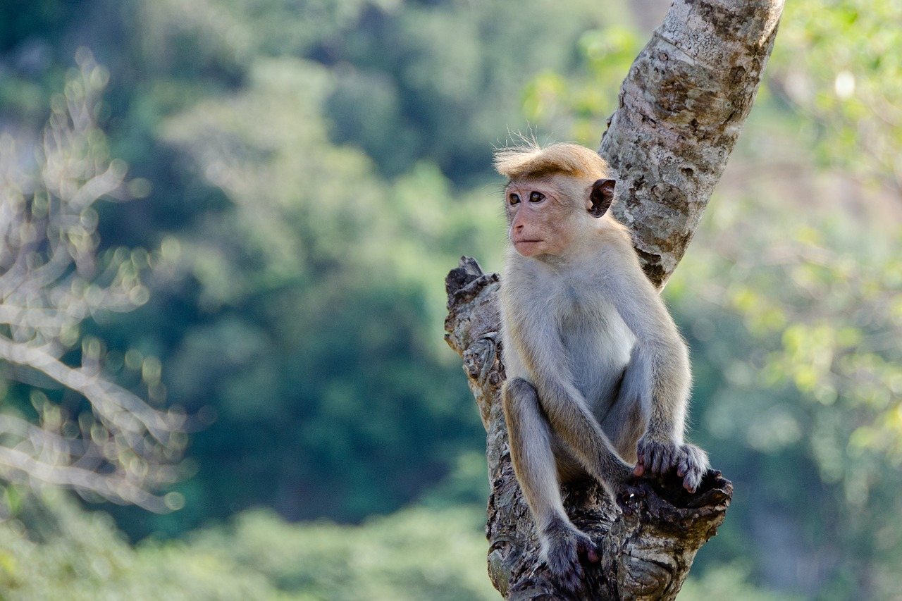
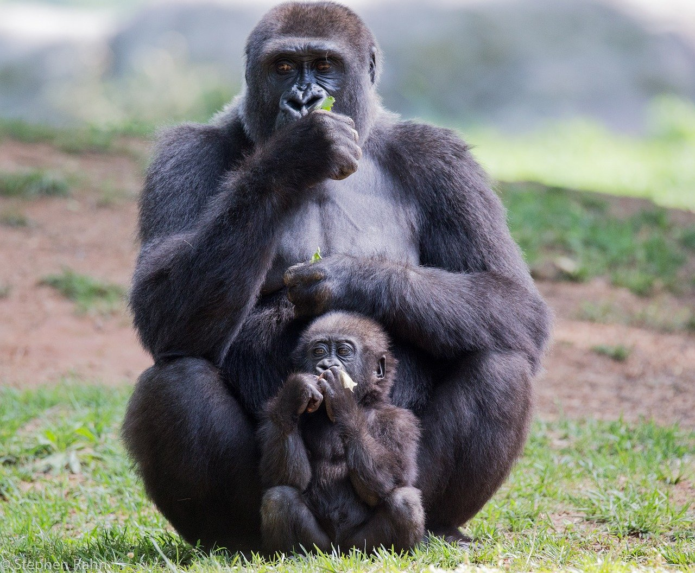
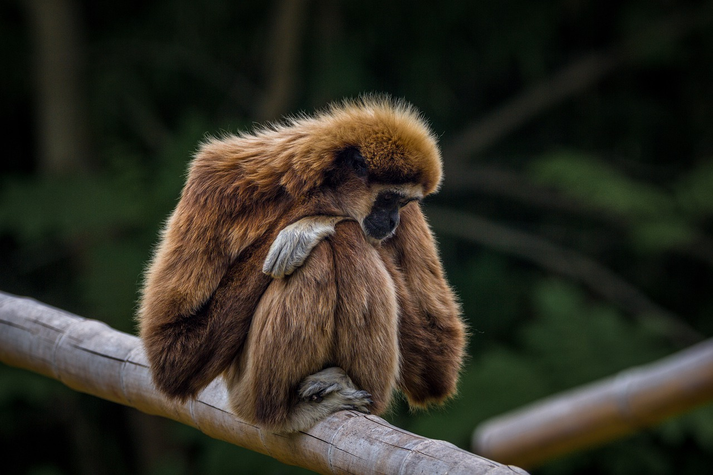
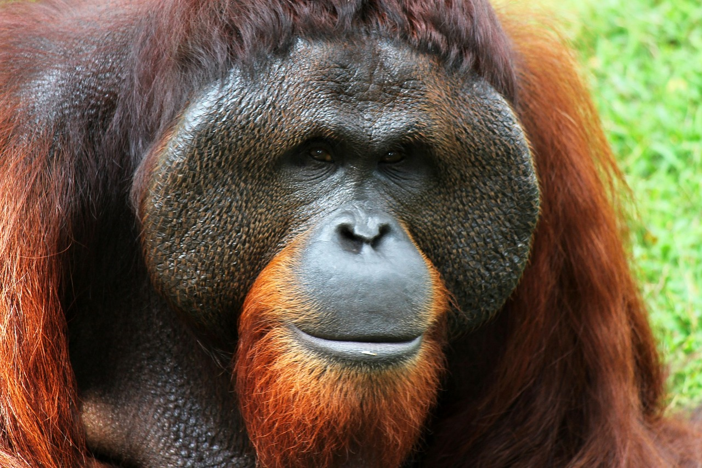

Welcome to the Primate House
Primates are a group of mammals that contains all lemurs, monkeys and apes including humans.
There are about 400 species of primates. All primates are similar to humans in some ways, but language is an important difference. Primates have hands with five fingers and flat fingernails (most other animals have claws). Primates are split into two groups: Strepsirrhini and Haplorhini. Haplorrhini includes monkeys, tarsiers and apes including humans. Strepsirrhini includes lemurs, lorises, galagos (also called bush babies) and the Aye-Aye.
Primates are one of the few eutherian groups which re-evolved full colour vision.
Monkey
 Monkey is a common name that may refer to groups or species of mammals, in part, the simians of infraorder Simiiformes. The term is applied descriptively to groups of primates, such as families of New World monkeys and Old World monkeys. Many monkey species are tree-dwelling (arboreal), although there are species that live primarily on the ground, such as baboons. Most species are also active during the day (diurnal). Monkeys are generally considered to be intelligent, especially the Old World monkeys of Catarrhini.
For More Information, please visit: https://en.wikipedia.org/wiki/Monkeyn
Gorilla
 Gorillas are ground-dwelling, predominantly herbivorous apes that inhabit the forests of central Sub-Saharan Africa. The genus Gorilla is divided into two species: the eastern gorillas and the western gorillas (both critically endangered), and either four or five subspecies. They are the largest living primates. The DNA of gorillas is highly similar to that of humans, from 95 to 99% depending on what is included, and they are the next closest living relatives to humans after the chimpanzees and bonobos.
For More Information, please visit: https://en.wikipedia.org/wiki/Gorilla
Gibbon
 Gibbons are apes in the family Hylobatidae. The family historically contained one genus, but now is split into four genera and 18 species. Gibbons live in tropical and subtropical rain forests from eastern Bangladesh and northeast India to southern China and Indonesia (including the islands of Sumatra, Borneo, and Java).
For More Information, please visit: https://en.wikipedia.org/wiki/Gibbon
Orangutan
 The orangutans (also spelled orang-utan, orangutang, or orang-utang) are three extant species of great apes native to Indonesia and Malaysia. Orangutans are currently found in the rainforests of Borneo and Sumatra, but during the Pleistocene they ranged throughout Southeast Asia and South China. Classified in the genus Pongo, orangutans were originally considered to be one species. From 1996, they were divided into two species: the Bornean orangutan (P. pygmaeus, with three subspecies) and the Sumatran orangutan (P. abelii). In November 2017, it was reported that a third species had been identified: the Tapanuli orangutan (P. tapanuliensis).
For More Information, please visit: https://en.wikipedia.org/wiki/Orangutan
 My Virtual Zoo
My Virtual Zoo